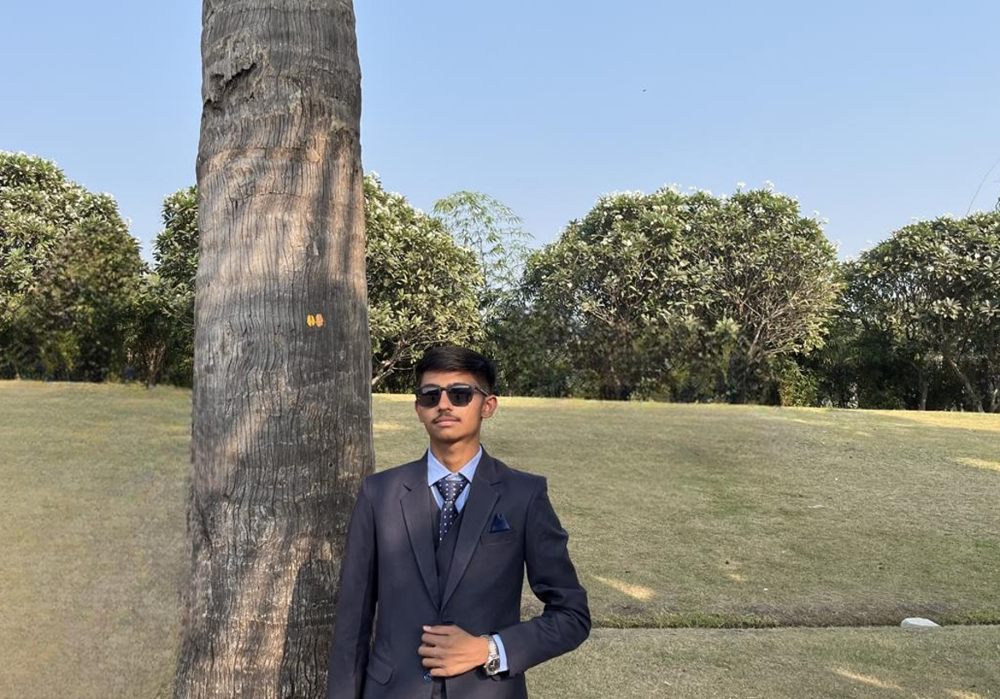

About Me
Built around your current academic path, technical interests, and the story recruiters can understand quickly.
Cybersecurity Student | Turning Code into Secure Systems
I am Aelish Ladani, a B.Tech CSE (Cyber Security) student at Marwadi University. My academic path began with an after-10th Diploma in Computer Engineering, and that foundation helped me build confidence in both software and systems thinking.
My strongest interests are cybersecurity, web development, Python, Linux, networking, DBMS, operating systems, and ethical hacking. I like practical work, clear structure, and projects that solve real problems.
I have completed internships, volunteered at university events, and earned certifications from HP LIFE, Cisco, Infosys Springboard, Forage, TCS iON, and Nasscom FutureSkills Prime. I use these experiences to build a resume and portfolio that feels real, useful, and ready for internships.

Academic Journey
Two degrees, one foundation: a diploma base followed by a cyber security degree.
B.Tech in Computer Science & Engineering (Cyber Security)
Marwadi University • Batch 2025–28 • 3rd year. Relevant learning: Ethical Hacking, Kali Linux, Information Security, OS Security, Computer Networks, DBMS, Web Development Technology, Programming with Python, and Data Structure.
Diploma in Computer Engineering
Marwadi University • Aug 2022 – Jun 2025. Built a practical technical base and completed my diploma internship at WildTech, where I learned PHP, MySQL, JavaScript, and Bootstrap.
Beyond Academics
Volunteer at MU Fest 2025, plus certifications in cybersecurity, Python, Linux, AI awareness, and communication / career skills. These helped shape a profile that feels broader than just classroom learning.